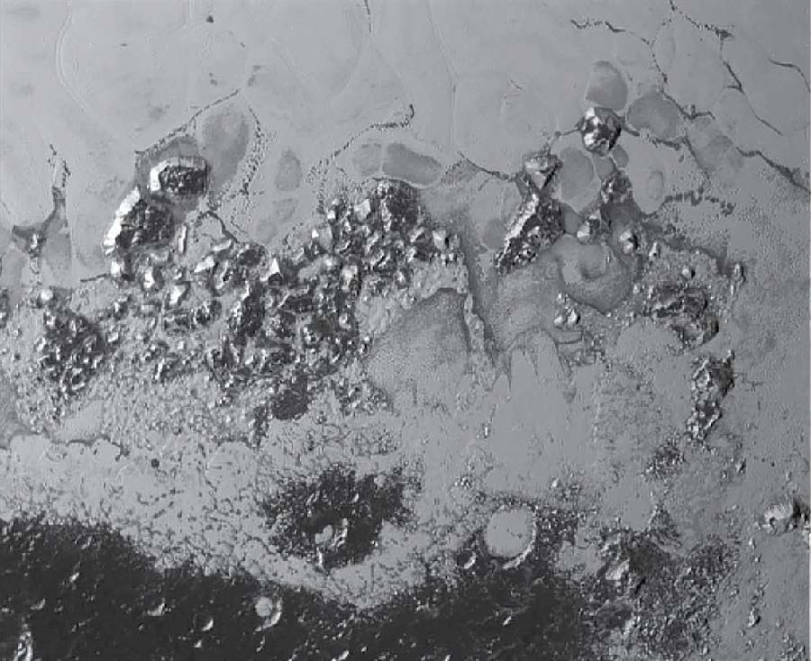

DIGEST

Detailed pictures of Pluto taken by the New
Horizons spacecraft have revealed a smooth ice
cap near its equator, with flowing glaciers.
Pluto in close-up
Stunning images beamed back to Earth
by New Horizons have enhanced Pluto's
mystique. By RICHARD A LOVETT.
As recently as June, Pluto was one of the
most mysterious objects in the Solar System
– so remote scientists weren't even sure
of its size. Today, we not only have a clear
measure of its diameter (2,370 kilometres,
give or take 20 kilometres), but we know
it has a red-streaked polar cap, steep